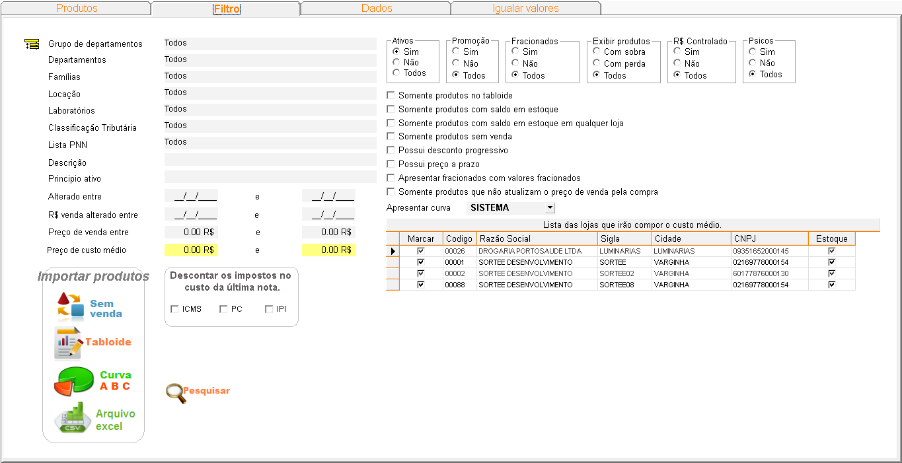
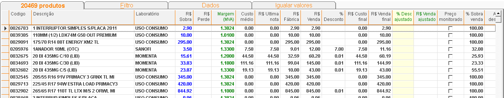
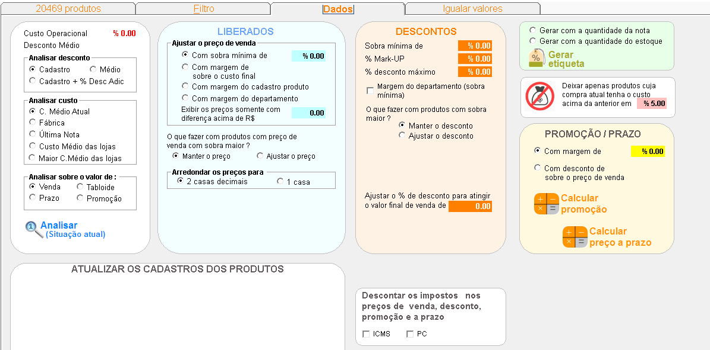
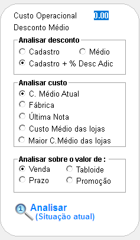
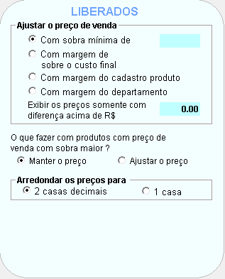
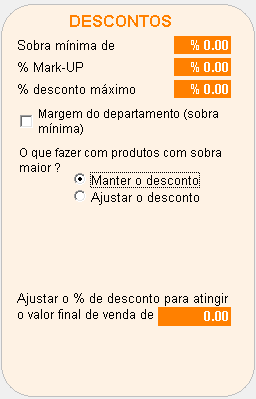
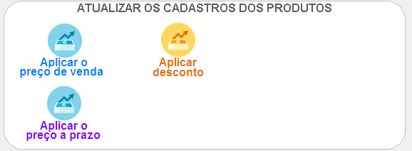
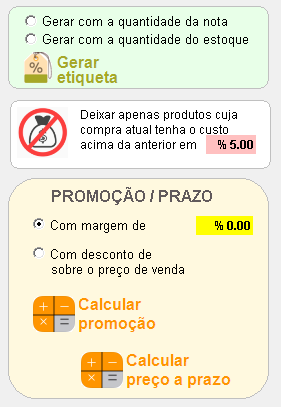
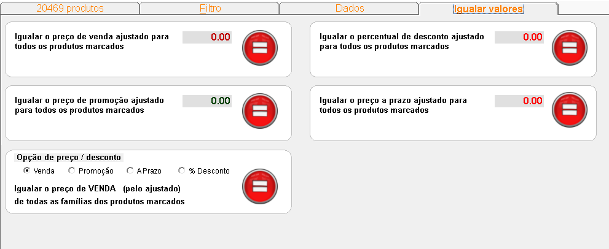
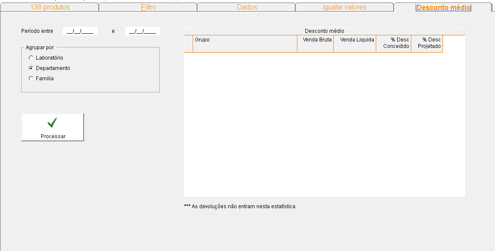

É uma forma de verificar se o preço da empresa está competitivo com o mercado sem levar prejuízo.
+Passo 1:
O filtro é composto por diversos critérios que permitem selecionar produtos de acordo com características específicas, como grupo de departamentos, família, laboratório, entre outros. Ao aplicar os filtros, o sistema exibirá apenas os produtos que atendem aos critérios selecionados.

Como Utilizar o Filtro:
- Selecione os critérios:Marque as opções desejadas em cada campo do filtro.
- Clique em "Pesquisar": Após definir todos os critérios, clique no botão "Pesquisar" para exibir os produtos que atendem aos filtros.
+Passo 2:
A aba "Produtos" apresenta uma lista filtrada de produtos, exibindo informações relevantes para a análise de preços e gestão de estoque. Através dessa aba, é possível visualizar as características de cada produto, como código, descrição, laboratório, preços, margens e outras métricas importantes para a tomada de decisão.

- As colunas "Sobra" e "Perda" são cruciais para a análise de rentabilidade e precificação dos produtos.
- Elas indicam se o preço de venda final está gerando um lucro (sobra) ou um prejuízo (perda) em relação aos valores praticados.
+Passo 3:
A aba "Dados" é uma ferramenta para a gestão de preços e produtos. Ela apresenta fucionalidades para analise e precificação de produtos em massa.

- O custo operacional, referente às despesas gerais da farmácia e fornecido pela contabilidade, pode ser adicionado aos produtos como uma porcentagem. É fundamental analisar os valores de mercado para garantir a viabilidade desse ajuste.
- Basta informar o percentual desejado no campo "Custo operacional" e verificar se as opções presentes em (analisar desconto, analisar custo e analisar sobre o valor de) estão marcadas da forma que deseja vizualizar, clique em "Analisar". Na tela de produtos, será possível identificar quais itens estão gerando prejuízo com o custo operacional atual e avaliar a necessidade de ajustar o preço de venda."

Produtos monitorados não podem ultrapassar o PMC, então é viável ajustar a sobra dos produtos que
são liberados, na aba dados opção liberado é possível informar uma porcentagem de sobra que
deseja fixar em cima de produtos liberados.

É possível definir uma margem de lucro mínima desejada sobre o custo de cada produto, mesmo após
aplicar descontos. Ao informar a porcentagem de lucro desejada na opção 'desconto', o sistema
calculará automaticamente o valor máximo de desconto que pode ser concedido sem comprometer essa
margem.

Após analisar os dados e definir os novos preços e descontos, é necessário atualizar o cadastro
de cada produto. Para isso, utilize as opções disponíveis em 'atualizar cadastro do produto'.

+Outras opções:

Geração de Etiquetas:
- Gerar com a quantidade da nota:Permite gerar etiquetas com a quantidade de produtos especificada em uma nota fiscal, ideal para organização de produtos recém-adquiridos.
- Gerar com a quantidade do estoque:Gera etiquetas com base na quantidade de produtos em estoque, útil para reposição de etiquetas ou organização da prateleira. Filtragem de Produtos:
Deixar apenas produtos cuja compra atual tenha o custo acima da anterior em %:
- Essa opção filtra os produtos que tiveram um aumento de custo superior ao percentual definido, permitindo a identificação de produtos com maior variação de preço.
Promoções e Preços a Prazo:
- Com margem de %:Define a margem de lucro desejada sobre o custo do produto, sendo utilizada para calcular o preço de venda.
- Com desconto de % sobre o preço de venda:Aplica um desconto percentual sobre o preço de venda do produto, útil para a criação de promoções.
- Calcular promoção:Realiza o cálculo do preço de venda com base na margem de lucro ou desconto definido, gerando o valor final do produto na promoção.
- Calcular preço a prazo:Calcula o valor a ser pago em uma venda a prazo, considerando o preço de venda e as condições de pagamento acordadas.

A ferramenta "Igualar Valores" é uma funcionalidade poderosa que permite ajustar os preços de
diversos produtos de forma rápida e uniforme. Para utilizar essa ferramenta, siga os passos abaixo:
Como Utilizar:
- Selecione os produtos:Na listagem de produtos, marque os itens que deseja ajustar
os preços.
- Escolha o tipo de ajuste:Selecione uma das opções disponíveis para definir o tipo
de ajuste que deseja realizar (preço de venda, desconto, promoção ou preço à prazo).
- Informe o novo valor:Digite o novo valor que será aplicado a todos os produtos
selecionados.
- Confirme a alteração:Clique no botão de confirmação para aplicar os ajustes.

Obs.:Para acessar esta aba, siga estes passos: na aba "Dados", aplique os filtros, analise a situação cadastral e, em seguida, calcule o desconto no campo correspondente. Após concluir essas etapas, a aba desejada estará disponível.
A tela "Desconto Médio" fornece uma visão geral dos descontos concedidos em um período específico
para os produtos selecionados. Essa ferramenta é fundamental para acompanhar o desempenho das vendas
e avaliar a eficácia das estratégias de preços.
Como Utilizar:
- Selecione o Período: Defina o intervalo de tempo que deseja analisar (por exemplo,
mês, trimestre, ano).
- Escolha o Agrupamento: Selecione o critério de agrupamento (laboratório,
departamento ou família) para detalhar a análise.
- Clique em "Processar": O sistema irá calcular e apresentar os resultados.